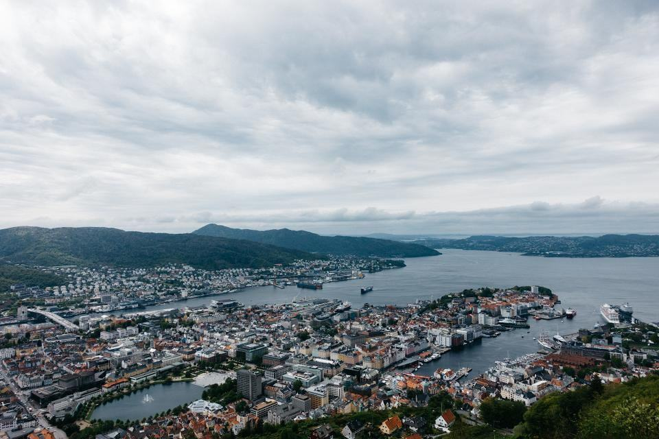
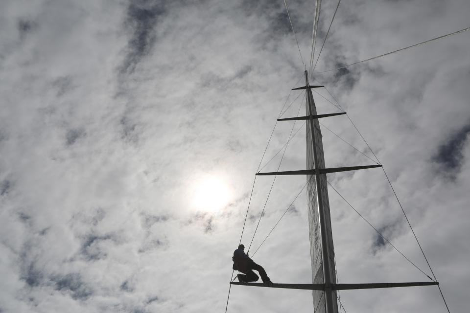
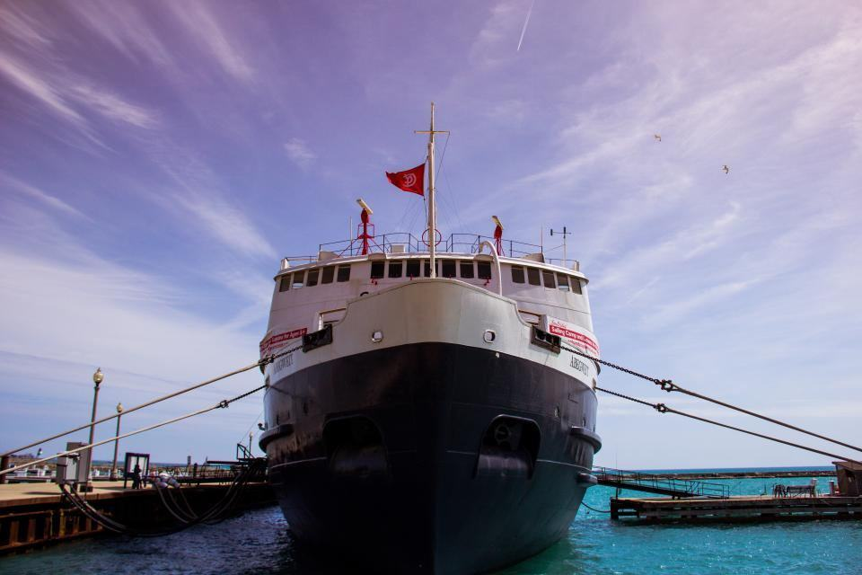
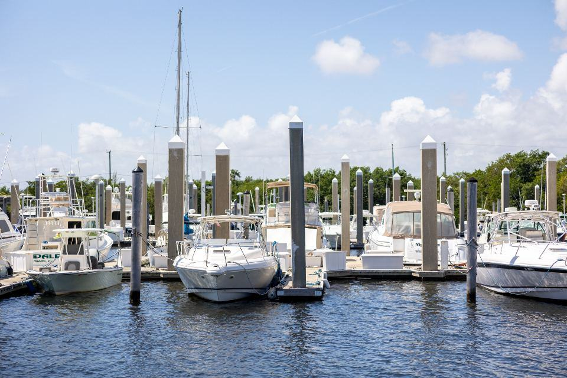

Referenser
Ett urval av uppdrag vi har utfört.
- 2026

Ramavtal finska räddningsverk
Tolv 9-metersribbar med värmd styrhytt och bårplats levereras i omgångar.
- 2026

Transportbåt Bottenviken
11 meter med tolv stötdämpade säten och plats för verktyg och reservdelar.
- 2025

Västerviks räddningstjänst
Ersättare för vår första båt från 1996 – som fortfarande är i reservdrift.
- 2024

Fiskeritillsyn längs Smålandskusten
En 8-metersbåt med 50 knops toppfart och mörkerkamera.
- 2025

Tubverkstaden
1 200 kvadratmeter med klimatstyrning för limning av hypalon.
- 2025

Turistribbar i Lofoten
Fyra båtar för valsafari med uppvärmda säten och överlevnadsdräkter ombord.
Räddningschefer och driftchefer
Mattias O., räddningschef · Västervik”Vår ribbåt från 2004 fick nya tuber och ett nytt elsystem. Den gick ut på 213 larm förra året.”
Sara L., driftchef vindkraft · Piteå”Teknikerna kliver av båten utan ont i ryggen efter 25 sjömil. Det märks i sjukskrivningarna.”
Kjetil B. · Ålesund”Servicebilen kom till Ålesund dagen efter att vi ringt. Båten var i tjänst igen samma vecka.”